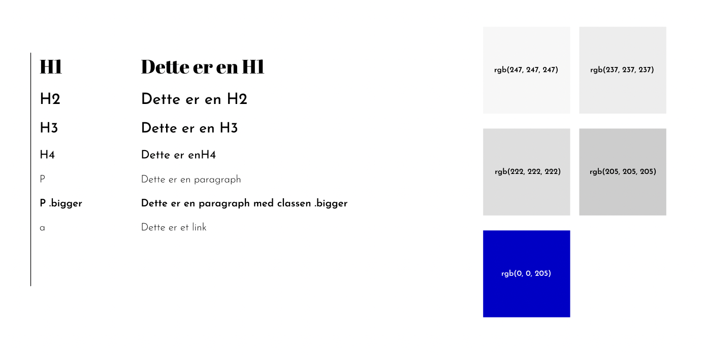

Assignment Portfolio
Til udarbejdelsen af disse opgaver har jeg produceret og anvendt dette style tile, som skal sikre consistency over sitet.
Jeg har valgt at anvende ret anonyme primære og sekundære farver, så min accent farve får lov at stå mere for sig selv.
I arbejdet med fonte har jeg anvendt en display font til mine H1 og en sans serif til de resterende elementer med varierende font weights.
Jeg endte desværre i et tidspres, da selve layout delen tog mere tid end forventet, hvorfor jeg gerne ville have haft endnu mere tid til at få stylet med margins og font sizes.
